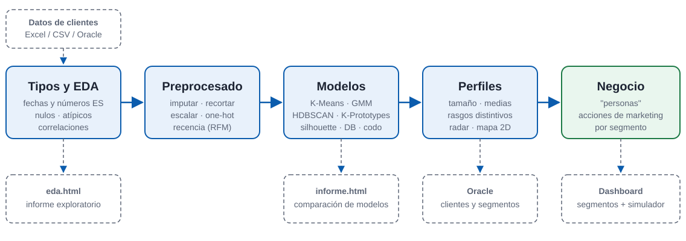

Segmentación de clientes y estrategias de marketing personalizadas
Equipo [nombre del equipo] · [Nombre 1], [Nombre 2], [Nombre 3], Javier Román
Tratar a todos los clientes igual desperdicia presupuesto. [Dato del dataset que lo demuestre: p. ej. "el 12 % de los clientes genera el 40 % del gasto"]
Objetivo: descubrir grupos de clientes parecidos sin etiquetas previas y decidir qué hacer con cada uno.

Comparamos [N] modelos y elegimos [modelo, k] por calidad (silhouette [x]) y por interpretabilidad para negocio.
Plan B si falla el directo: vídeo de la demo (USB) y esta captura.
| Persona | Peso | Quiénes son | Acción de marketing |
|---|---|---|---|
| [Nombre] | [%] | [2 rasgos clave] | [acción concreta] |
| [Nombre] | [%] | [2 rasgos clave] | [acción concreta] |
| [Nombre] | [%] | [2 rasgos clave] | [acción concreta] |
| [Nombre] | [%] | [2 rasgos clave] | [acción concreta] |
| [Nombre] | [%] | [2 rasgos clave] | [acción concreta] |
Insight principal: [el hallazgo que más sorprende o más dinero mueve]
¿Preguntas?